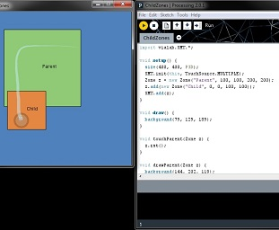

Human-Computer Interaction & Information Visualization
Simple Multi-Touch (SMT) Toolkit
May 2011 – September 2014Technologies: Java, Processing, TUIO, Leap Motion
Project Website: https://vialab.ca/smt/
Lab Project Page: https://vialab.ca/research/simple-multi-touch-toolkit
The Simple Multi-Touch Toolkit
Chapter in Designing Digital Surface Applications
Supervised by Dr. Collins and Dr. Hancock, I was the
original creator of Simple Multi-Touch (SMT) toolkit. It is an open source Processing library designed to make
multi-touch computing accessible to non-experts, and to facilitate rapid prototyping of interactive
applications. SMT is meant to be used as a tool for teaching university students, conducting research,
prototyping, etc.
It is being used in the Human-Computer Interaction courses at the University of Ontario Institute of
Technology, and at the University of Waterloo. It is also being used in multiple labs around the world to
create research prototypes.
Interesting challenges:
Designing and developing custom multi-touch gesture recognition algorithms for scaling, rotation, translation,
vertical/horizontal swipes, single/double taps, etc.
